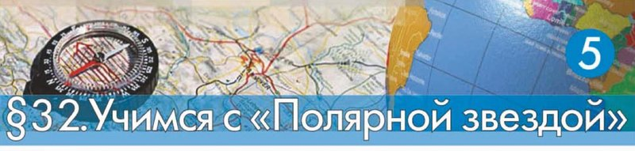

Круизный маршрутный лист путешественника
Амина, этот параграф — не рассказ, а работа: весь класс будто уходит в морской круиз, и твоё дело — проложить путь корабля на карте. А потом заполнить «маршрутный лист»: записать по порядку, откуда вышли, где остановимся и что там посмотрим.

Представь, что ты собираешь рюкзак не на день, а на несколько недель. Корабль отойдёт от причала — и вернуться за забытой вещью уже не получится. Поэтому у путешественников есть лист, где всё записано заранее.
Такой лист называют маршрутным. В нём по порядку: откуда вышли, куда идём, где остановимся, что успеем посмотреть, сколько примерно плыть. Так планируют не только круиз, но и поход в горы, и поездку к родне, и школьную экскурсию.
Здесь учебник не объясняет новое правило, а даёт задание. Значит, готовых ответов на этой странице нет — и у нас их тоже не будет. Будет план работы, подсказки, с чего начать, словарик нужных слов и игра на внимание к карте.
У каждого шага вверху написано, на какой странице учебника искать. Внизу шага есть «Подробнее, как в учебнике»: там всё, что есть на этой странице, ничего не пропущено.
Надпись вверху шага подсказывает, откуда он: золотая — задание учебника, оранжевая — сверх учебника (пересказ, словарик, игра). Синих шагов «из учебника» здесь нет: весь параграф — одно большое задание.
Подробнее, как в учебнике · с. 106
- § 32 называется «Учимся с „Полярной звездой“». Цифра 5 в кружке на шапке параграфа значит, что это пятый такой практикум в учебнике.
- Заголовок раздела на странице: «Выполняем проектное задание».
- Первые слова параграфа: «Вам предстоит выполнить проектное задание. Ваша задача — проложить маршрут на карте и заполнить „Круизный маршрутный лист путешественника“».
- На полях страницы зелёная врезка: «Вспомните правила работы с контурной картой (с. 93)».
- Весь параграф занимает одну страницу — с. 106. Новых определений в нём нет, вопросов и заданий в конце тоже нет: всё, что нужно сделать, перечислено по пунктам 1—6 (следующий шаг).
- Других иллюстраций, кроме шапки параграфа (компас на карте и глобус), на странице нет.
Что задаёт учебник
Представьте, что вы всем классом отправляетесь в морское путешествие — круиз по крупным островам мира. Ваш корабль «Александр Суворов» выходит из Санкт-Петербурга и направляется к острову Новая Гвинея.
Маршрут предусматривает остановки на островах:
- Великобритания,
- Мадагаскар,
- Шри-Ланка,
- Суматра,
- Ява,
- Калимантан.
По указанию учителя вы будете работать самостоятельно, или с товарищем, или группой. Карта с маршрутом должна быть у каждого своя. Маршрутный лист можно сделать один на группу. Учитель распределит работу над заданием между участниками.
Начните работу с изучения физической карты полушарий в географическом атласе или на с. 180—181 Приложения.
План работы
Выясните, в каком направлении от вашего населённого пункта находится Санкт-Петербург. Каково расстояние от него до Санкт-Петербурга?
Узнайте, как добраться до Санкт-Петербурга (поездом или самолётом), сколько времени займёт дорога (можно выяснить в Интернете или в справочной по телефону либо расспросить старших).
Найдите на физической карте Санкт-Петербург и острова, указанные в маршруте. Подпишите их на контурной карте.
Проложите маршрут на контурной карте, обозначайте путь цветной линией: от Санкт-Петербурга по Балтийскому морю к острову Великобритания; через Гибралтарский пролив по Средиземному морю; через Суэцкий канал по Красному морю; обогнув полуостров Сомали — к острову Мадагаскар; от Мадагаскара — к острову Шри-Ланка; от Шри-Ланки — к островам Суматра, Ява, Калимантан и Новая Гвинея.
Придумайте название контурной карте.
Заполните маршрутный лист и оформите контурную карту.
НЕ забудьте заполнить легенду карты.
«Маршрутный лист можно оформить как таблицу в тетради или на отдельном листе либо подготовить в электронном виде. Художественно оформите маршрутный лист, подобрав фотографии, рисунки».
Учебник этого не показывает: самой таблицы на с. 106 нет, сказано только, что маршрутный лист можно оформить как таблицу. Значит, столбцы вы придумываете сами — или их назовёт учитель.
Спроси на уроке, есть ли у него образец. А если образца нет, наши предложения — на следующем шаге.
Подробнее, как в учебнике · с. 106
- «Выполняем проектное задание. Вам предстоит выполнить проектное задание. Ваша задача — проложить маршрут на карте и заполнить „Круизный маршрутный лист путешественника“».
- «Представьте, что вы всем классом отправляетесь в морское путешествие — круиз по крупным островам мира. Ваш корабль „Александр Суворов“ выходит из Санкт-Петербурга и направляется к острову Новая Гвинея. Маршрут предусматривает остановки на островах: Великобритания, Мадагаскар, Шри-Ланка, Суматра, Ява, Калимантан».
- «По указанию учителя вы будете работать самостоятельно, или с товарищем, или группой. Карта с маршрутом должна быть у каждого своя. Маршрутный лист можно сделать один на группу. Учитель распределит работу над заданием между участниками».
- «Начните работу с изучения физической карты полушарий в географическом атласе или на с. 180—181 Приложения».
- Пункты 1—6 приведены выше полностью, слово в слово, в том же порядке, что в книге.
- Между пунктами 4 и 5 в книге стоит абзац: «Маршрутный лист можно оформить как таблицу в тетради или на отдельном листе либо подготовить в электронном виде. Художественно оформите маршрутный лист, подобрав фотографии, рисунки».
- Врезка на полях: «Вспомните правила работы с контурной картой (с. 93)».
С чего начать
Самое трудное в таком задании — первый шаг. Дальше пойдёт легко: круиз почти весь описан в пункте 3, нужно только аккуратно перенести его на карту.
Разложи карты
- Физическая карта полушарий — в атласе или в Приложении учебника. Приложение — это карты в самом конце книги, они начинаются с с. 180: карта полушарий на с. 180—181, а сразу за ней, на с. 182, физическая карта мира. По ним ты находишь города, острова, моря и проливы.
- Контурная карта мира — на ней ты рисуешь. Это та самая карта, которую ты уже начала заполнять в прошлом практикуме «Учимся с „Полярной звездой“» на с. 92—93: там третий шаг просил нанести равнины и горы из заданий на с. 87 и с. 91 и подписать океаны — «чтобы легче ориентироваться на будущем маршруте». Вот он, будущий маршрут.
- Правила работы с контурной картой — там же, на с. 93, во врезке. Учебник просит их вспомнить, так что перечитай перед работой.
- Линейка, простой карандаш, цветные карандаши или ручки, нитка — ниткой удобно мерить кривую линию.
Как проверить, что путь возможен по воде
Веди пальцем по карте только по синему. Упёрлась в сушу — значит, где-то рядом есть «дверь»: пролив или канал. Две такие двери учебник уже назвал: Гибралтарский пролив и Суэцкий канал.
А ещё в пункте 3 есть слово «обогнув». Полуостров Сомали корабль не пересекает, а обходит по морю. Найди его на карте и посмотри, с какой стороны придётся обходить.
А почему нельзя просто провести прямую линию?
Потому что корабль идёт по воде. Прямая линия от Мадагаскара до Шри-Ланки пройдёт по океану — так можно. А прямая от Санкт-Петербурга до Великобритании легко «проедет» по суше, если не обойти Данию. Поэтому линию маршрута ведут не по линейке, а по карте: она изгибается вдоль берегов.
Сколько строк будет в листе
Посчитай точки маршрута: порт отправления — Санкт-Петербург, шесть островов-остановок и конечный остров Новая Гвинея. Получается восемь строк. Запиши их в том порядке, в каком к ним приходит корабль, а не как попало.
- № по порядку;
- остановка: остров и страна;
- каким морем или океаном сюда пришли;
- через что прошли по дороге: пролив, канал, вокруг чего обогнули;
- что посмотрим на остановке — одна-две строчки;
- примерное расстояние от прошлой остановки.
Столбцов может быть меньше или больше. Главное, чтобы по листу было понятно, куда и зачем плывёт корабль.
Как измерить расстояние
Приложи нитку к линии маршрута и повтори ниткой все изгибы. Потом распрями нитку, измерь линейкой и переведи сантиметры в километры по масштабу карты. Число получится приблизительное — так и надо написать: «около стольких-то километров».
Про первый пункт
Найди на карте России Каспийск и Санкт-Петербург. Вспомни, где на карте север, и сама посмотри, в какой он стороне от нас. Расстояние тоже измерь по масштабу, а не бери из головы. А про поезд и самолёт спроси у старших или посмотри расписание — это и есть задание.
Может показаться, что круиз проще начать из Каспийска: море у нас прямо за окном. Но Каспийское море замкнутое, в океан из него по морю не выйдешь.
Зато из Каспия есть выход по рекам и каналам: по Волге и Волго-Донскому каналу — в Азовское и Чёрное моря, по Волго-Балтийскому пути — в Балтийское море. Если захочешь придумать свой, дополнительный маршрут — это честная идея. А в задании учебника корабль всё-таки выходит из Санкт-Петербурга.
Подробнее, как в учебнике · с. 106
- О начале работы в книге сказано так: «Начните работу с изучения физической карты полушарий в географическом атласе или на с. 180—181 Приложения». Приложение — карты в конце учебника, они начинаются с с. 180; на с. 182 — физическая карта мира.
- Врезка на полях страницы: «Вспомните правила работы с контурной картой (с. 93)».
- С. 92—93 — это предыдущий практикум «Учимся с „Полярной звездой“». Его третий шаг: «Нанесите на контурную карту равнины и горы, перечисленные в заданиях 1 на с. 87 и на с. 91. Подпишите океаны, чтобы легче ориентироваться на будущем маршруте». Там же, на с. 93, стоит врезка «Правила работы с контурной картой».
- Про оформление: «Маршрутный лист можно оформить как таблицу в тетради или на отдельном листе либо подготовить в электронном виде. Художественно оформите маршрутный лист, подобрав фотографии, рисунки».
- Всё остальное на этом шаге — подсказки, как это сделать. В учебнике их нет, и готовых ответов он тоже не даёт.
Словарик путешественника
ИграНажми на карточку, и она перевернётся. Эти слова понадобятся, когда будешь заполнять лист: ими удобно объяснить, где идёт корабль.
Найди лишнее
ИграТри названия из одной компании, одно — чужое. Найди чужое. Эти названия в задании не нужны: игра просто тренирует глаз.
Что должно получиться
Работа готова, когда у тебя на столе лежат две вещи: контурная карта с проложенным маршрутом и маршрутный лист. Открой кирпичики и проверь себя по ним перед тем, как сдавать.
Маршрутный лист — это рассказ о круизе в виде таблицы: откуда вышли, какими морями и проливами идём, где остановимся и что там посмотрим, — а рядом контурная карта, на которой этот путь нарисован и объяснён в легенде.